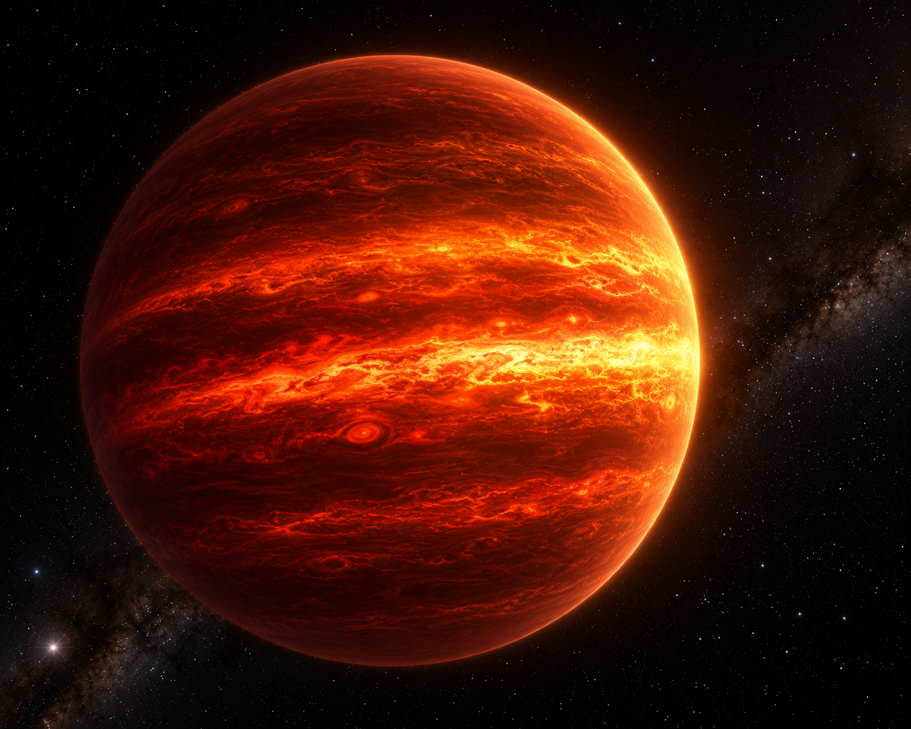
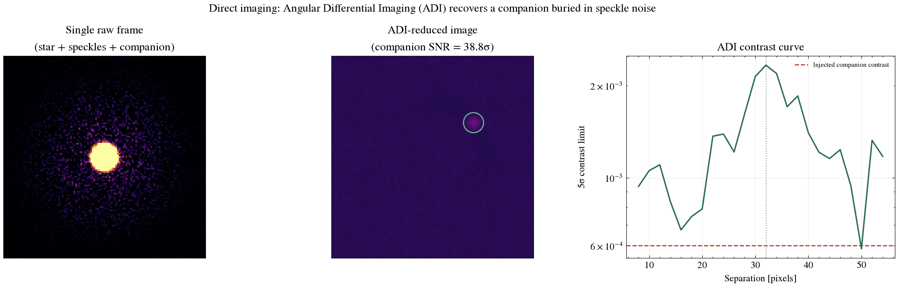
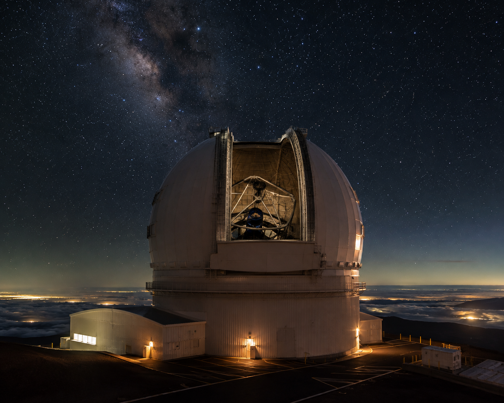

Exoplanet Detection Methods · Direct Imaging
The only method that produces an actual picture of a planet: resolving its light as a separate point source next to its host star. This page derives the contrast and angular-resolution physics from first principles, works through real numbers including HR 8799 b, reports current detection statistics, and includes a live calculator built on the same equations.
AI-generated artist's concept of a directly imaged exoplanet — not a real photograph. All data and figures on this page come from real high-contrast imaging physics and published detections (see below).
Direct imaging faces two combined challenges that both have to be overcome simultaneously. The first is contrast: a Jupiter-mass planet is roughly 10⁻⁴ to 10⁻⁹ times fainter than its star, depending on the planet's age (younger giant planets are still glowing from formation and are far brighter in the infrared) and observing wavelength. The second is angular separation: most known planets sit far too close to their star to be resolved from typical interstellar distances. The angular separation of a planet at 1 AU seen from 10 parsecs is only 0.1 arcseconds — comparable to, or smaller than, the diffraction limit of even a large telescope at visible wavelengths.
The two problems trade off against each other: a wide-orbit planet is easier to separate from its star angularly, but is usually fainter in absolute terms too, since it intercepts less starlight and formed farther from the heat of formation. That tension is why direct imaging's best targets are young, wide-orbit, self-luminous giant planets — not, in general, the close-in rocky planets covered by transit and radial-velocity surveys.
For a circular aperture, the smallest angle a telescope can in principle resolve between two point sources (the Rayleigh criterion) is:
θ = 1.22 · λ / D
where λ is the observing wavelength and D is the telescope's aperture diameter. The factor 1.22 is specific to resolving two point sources with a circular aperture — not a universal constant — and this is a hard geometric floor set by the wave nature of light, independent of any imperfection in the optics.
A telescope's diffraction pattern (the Airy pattern, for a circular aperture) sets that hard geometric limit on angular resolution, but real high-contrast imaging is usually limited by something else entirely. Adaptive optics correct atmospheric turbulence in real time, but leave behind residual, slowly evolving "quasi-static" speckles — small imperfections in the optics and imperfect AO correction that produce a mottled pattern of bright and dark spots across the field, each one looking exactly like a faint point source would. These speckles evolve on minutes-to-hours timescales, as temperature and mechanical flexure shift the optics slightly, and typically dominate over ordinary photon noise at the separations where planets are actually found. That's precisely why simply integrating longer doesn't help much on its own: unlike photon noise, which averages down as the square root of exposure time, speckle noise doesn't average down the same way, because it isn't statistically random from exposure to exposure — it's a real, structured, slowly-changing pattern.
Angular Differential Imaging (Marois et al. 2006) exploits geometry to break the degeneracy between a real companion and a speckle. On an alt-az telescope with the image derotator switched off (or deliberately disabled), the sky appears to rotate around the field center over the course of a night while the telescope's own optics — and their speckle pattern — stay fixed relative to the detector. A real companion, fixed on the sky, traces an arc across the detector as the field rotates; the speckles don't move at all.
The algorithm: build a reference image from the sequence (the simplest version is just the median of all frames), which captures the star and its speckles well since they're present in every frame in the same detector position, while the companion is smeared across many different positions and contributes little to the median. Subtract that reference from each individual frame, and what's left is mostly the moving companion signal sitting on a much fainter residual noise floor. De-rotating each residual frame back to a common sky orientation before combining them makes the companion's signal add up coherently across the sequence, while the leftover speckle residue — no longer at a fixed detector position after de-rotation — partially cancels.
Direct imaging is the only technique that yields a planet's own light directly: its spectrum, its temperature, and sometimes its resolved orbital motion measured over years — all without needing a fortunate transit alignment or a large reflex velocity to detect. It works best for young, still-warm, self-luminous giant planets on wide orbits: systems like HR 8799 (four imaged giant planets) and Beta Pictoris b were found and characterized this way. It remains the main way to study a planet's atmosphere independent of transmission or emission spectroscopy during transit — and the only method that directly measures orbital motion on the sky rather than inferring the orbit from a time-series signal.
The tradeoff: direct imaging is strongly biased toward young (hot, still glowing from formation), massive, wide-separation planets around nearby stars. It is currently close to blind to older, cooler, close-in planets — like most of the archival JWST/HST targets covered elsewhere in this portfolio — which is exactly why transit and radial-velocity spectroscopy remain necessary for characterizing the bulk of the known exoplanet population.

AI-generated close-up concept of a young, self-luminous giant exoplanet resolved as a separate point source — not an actual observation.
One of the first planets ever directly imaged (Marois et al. 2008) cleanly separates the two challenges from Section 1. Its real measured angular separation is 1.713 arcseconds at a distance of 39.4 parsecs — a physical separation of about 67 AU (angular separation in arcseconds simply equals physical separation in AU divided by distance in parsecs, by the definition of the parsec). The discovery used Keck (10 m primary mirror) and Gemini North (8 m) in the near-infrared H band (1.6 microns); the diffraction limit for a 10 m telescope there is:
θ = 1.22 × λ / D
= 1.22 × 1.6×10⁻⁶ m / 10 m
= 1.95×10⁻⁷ rad = 0.040 arcsecThe real separation (1.71 arcsec) is roughly 40 times larger than that diffraction limit, so diffraction-limited angular resolution alone was not what made this particular detection hard at this particular separation. That's a narrower claim than saying resolution is never a factor in direct imaging generally: a coronagraph's inner working angle, residual uncorrected starlight, and achievable contrast all still set real limits on detectability even for well-separated companions, and closer-in planets routinely are blocked by exactly these factors regardless of the raw diffraction limit. For HR 8799 b specifically, what made the detection hard was contrast: it's roughly 10⁻⁵ times fainter than its star in the near-infrared — well into the regime where quasi-static speckle noise, not the diffraction limit, sets the real detection floor, which is exactly the problem ADI was built to solve.
Move the sliders below. The outputs are computed live, directly from the angular-separation and diffraction-limit equations in Sections 1 and 5 — nothing here is looked up or pre-baked.
Angular separation uses θ [arcsec] = a [AU] / d [pc], exact by the definition of the parsec. Diffraction limit uses the Rayleigh criterion from Section 1. Contrast in magnitudes uses Δm = −2.5·log₁₀(contrast), the standard astronomical convention.
Pulled live from the NASA Exoplanet Archive's confirmed-planet counts by discovery method, accessed 2026-08-14:
Direct imaging is the least numerically productive of the four major detection methods, but for a structural reason rather than a technological one: it is fundamentally biased toward a narrow, rare demographic — young, massive, wide-separation, self-luminous giant planets around nearby stars — while transit and radial velocity are far better matched to the close-in planets that are both more common by orbital-period selection effects and easier to detect with those methods. What direct imaging lacks in count it makes up in what it uniquely reveals: real spectra, real photometry across multiple wavelengths, and in a growing number of systems, real orbital motion measured directly on the sky over successive years of observation — data no other detection method can provide.

scripts/direct_imaging_demo.py: raw single-frame vs. ADI-reduced detection significance, and a calibrated 5σ contrast curve corrected for small-sample statistics. See Section 8.
AI-generated illustration of a Keck-Observatory-class large ground telescope, the kind used in the real HR 8799 discovery discussed above. Not an official observatory photograph — see Keck Observatory for real imagery.
This repository implements a full Angular Differential Imaging reduction from scratch in Python:
The result from this repo's own run:
| Quantity | Value |
|---|---|
| Injected contrast | 6.0×10⁻⁴ |
| Raw single-frame SNR | 0.64σ — not detectable |
| ADI-reduced SNR | 27.0σ — clear detection |
| SNR improvement | 42.2× |
| Recovered flux | 88.3% of injected |
| 5σ contrast limit at the companion's separation | 1.5×10⁻⁴ (23 independent apertures) |
In a single raw frame the companion is buried in speckle noise (0.64σ — indistinguishable from a random fluctuation). After ADI reduction it becomes an isolated point source at 27.0σ, and the injected contrast sits above the 5σ detection limit everywhere on the contrast curve — a quantified demonstration of why this technique, not longer integration time on its own, is what makes direct imaging of exoplanets practical. Run it yourself: pip install -r requirements.txt && python scripts/direct_imaging_demo.py. Tests in tests/test_direct_imaging.py run automatically on every push via GitHub Actions.
The contrast curve in this repo shows a documented ADI artifact: elevated noise right around the companion's own separation, caused by self-subtraction — with only 90 degrees of parallactic-angle rotation, the companion's own signal partially contaminates the median reference frame and leaves negative "side lobes" near its true position (Milli et al. 2012). That's not a bug; it's a real limitation of ADI with limited field rotation, and real observing sequences are often planned specifically to maximize parallactic-angle coverage to reduce it. Separately, the quasi-static speckle field in this simulation is a static Gaussian-random texture rather than a correlated, slowly evolving PSF residual, and algorithmic throughput — how much real companion flux ADI itself removes through self-subtraction, beyond what this repo's 88.3%-recovery number already shows — isn't independently calibrated via fake-planet injection at multiple separations, which a published contrast curve would do.
A natural next step: inject fake companions at a grid of separations and position angles, run the same pipeline on each, and use the fraction of flux recovered at each point as an empirical throughput correction for the contrast curve — standard practice in real high-contrast imaging pipelines. You could also replace the median-combination reference PSF with a more capable algorithm like KLIP (Karhunen-Loève Image Projection, Soummer et al. 2012) or LOCI (Lafrenière et al. 2007), both of which build a smarter reference from a weighted combination of the other frames and typically recover more companion flux at fixed self-subtraction — implemented in real pipelines such as pyKLIP.